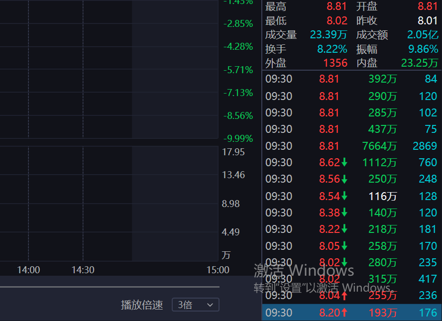

003032 · Leader Cycle Review
传智教育这一轮，只能按 4板建仓、5板加仓、7/8板减仓、断板清仓来复盘。
这页按“龙头战法复盘”的方式重做：先看整段日K路径，再看关键 5分K 节点。重点不是事后说它强，而是把当时应该下单、加仓、降风险、离场的瞬间标出来。
核心龙头传智教育 003032
周期主线AI应用 / 教育
买点核心4板爆量 + 5板回风
风控核心7/8板高位降仓
003032 · Leader Cycle Review
这页按“龙头战法复盘”的方式重做：先看整段日K路径，再看关键 5分K 节点。重点不是事后说它强，而是把当时应该下单、加仓、降风险、离场的瞬间标出来。
盘前从 3板以上候选里筛出传智教育，一鸣食品、明新旭腾作为对照。盘中 4板先手建仓，5板低点 8.02 不破、跳空大单回封时加仓；后面进入监管和加速末端，只做减仓和清仓，不再追高开新仓。
首次爆量弱转强，左侧给 3-4 成。
8.02 不破，回风定龙，右侧加到核心仓。
高位 T 字和监管区，只兑现不追。
爆量大阴 / 断板，周期结束。
日K用于看周期位置和仓位动作，5分K用于看盘中执行瞬间。
注：本图为战法复盘节点图，7/31 的 8.02 低点、8.81 回封、2.81 亿成交额采用复盘材料；其他 OHLC 用于还原操作节奏，精确逐笔以行情软件为准。
一字之后高开拉板，量能补足，左侧先手仓。
爆量分歧后回封，3-4 成建仓。
题材候选胜出，盘口不能破坏。
4板没放进候选池，发现晚。
下杀释放分歧，连续跳空回拉，大单回封。
8.02 不破，8.81 快封前打。
上方压单薄，下方成交大。
等封单变大后再排，慢了。
有先手可以格局，但只做兑现和降仓，不再追高。
高位再爆量，先走一半。
监管区、加速末端、后排跟随变弱。
没有先手不接高位 T 字。
龙头战法不在退潮日替龙头找理由，先清仓。
断板大阴 / 爆量破位，全走。
不做幻想反包，不做退潮加仓。
下一轮只看新最高标卡位。
核心不是“封住了看见很强”，而是封住之前已经出现：8.02 低点不破、跳空大单回拉、卖盘压单很薄、下方成交单更大。这个瞬间必须把涨停价买单准备好。



| 阶段 | 看什么 | 动作 | 仓位 |
|---|---|---|---|
| 3板以后 | 主动性、带动性、题材容量、唯一性 | 放入候选池 | 不买或小仓观察 |
| 4板爆量弱转强 | 量能到前高或低量板 1.5-2 倍，回封强 | 建仓 | 3-4 成 |
| 5板回风定龙 | 低点不破、跳空大单、上方压单薄 | 加仓 | 提高到核心仓 |
| 7/8板高位 | 监管区、T字、后排变弱、爆量 | 减仓 | 先走一半或分批兑现 |
| 断板退潮 | 爆量大阴、后排负反馈、题材走弱 | 清仓 | 回到空仓/观察 |